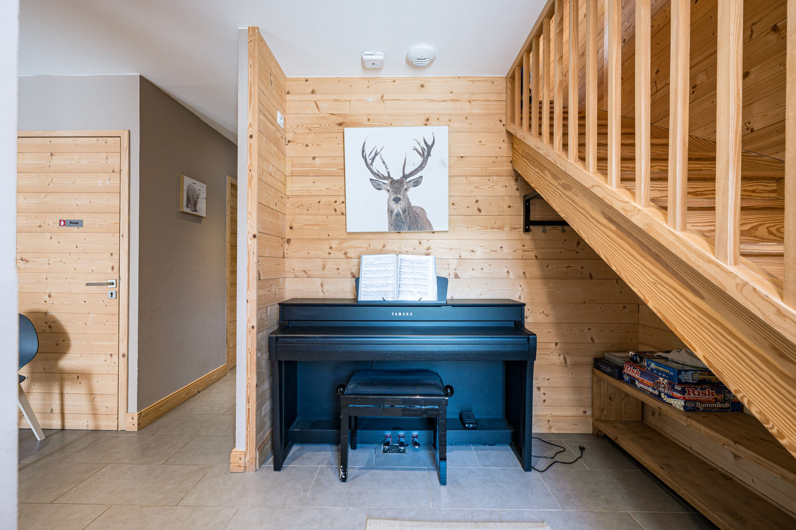
En famille
Une chambre avec lits superposés, des jeux, des barrières pour les escaliers et l’équipement bébé : les petits ont leur place.
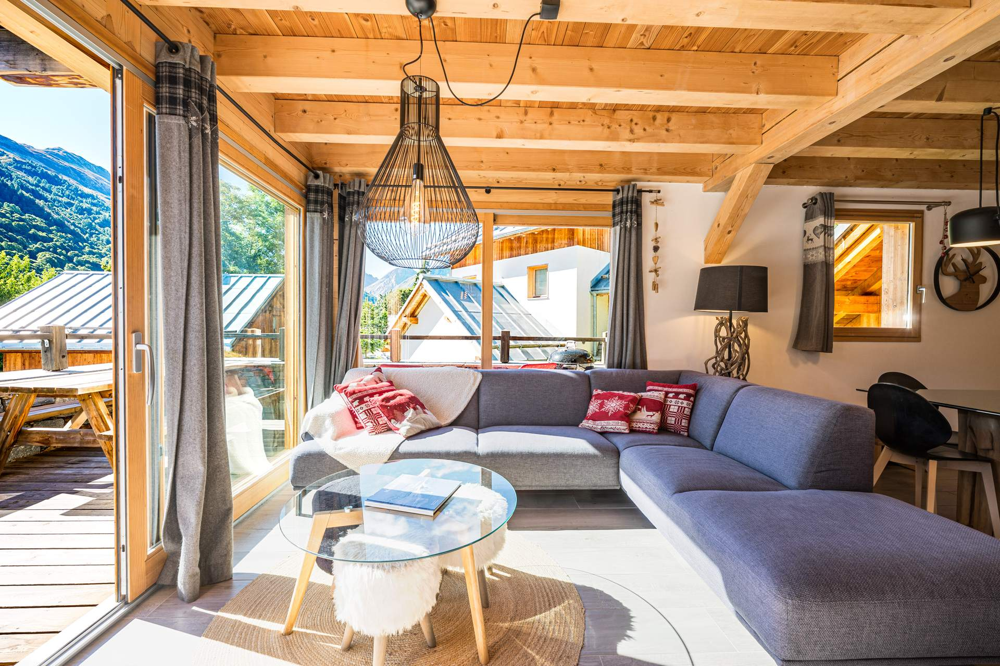
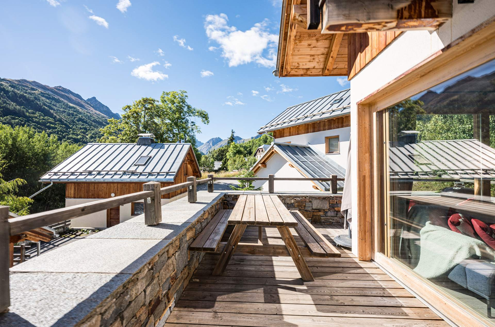
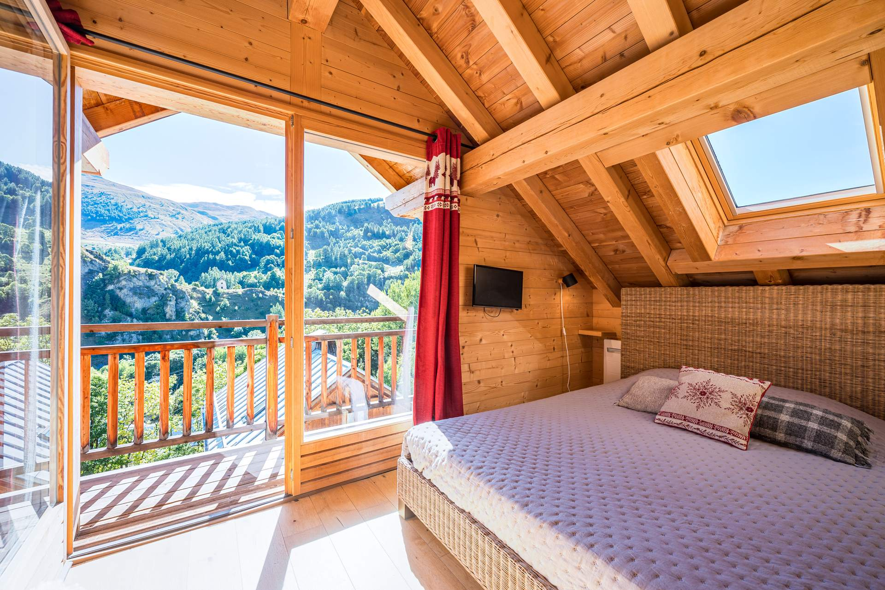
Un chalet 4 étoiles de 120 m² pour 12 personnes, au calme du hameau des Clots : la navette gratuite pour les pistes passe à 50 m de la porte.
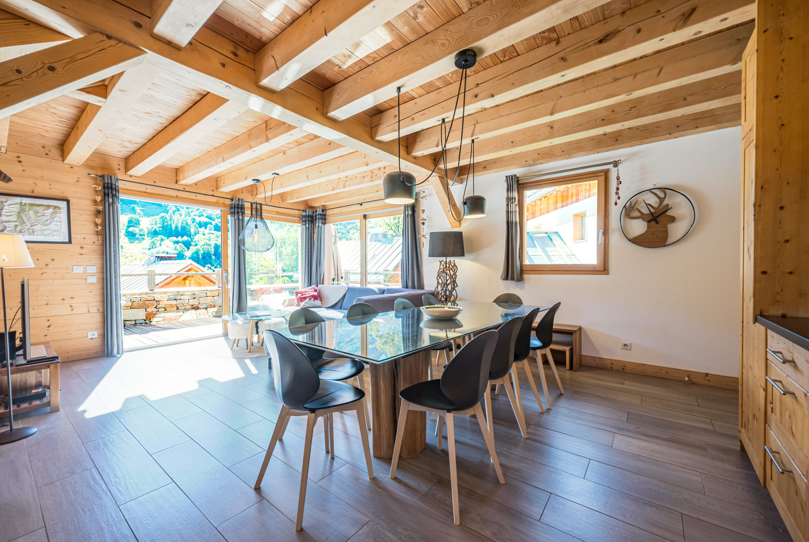
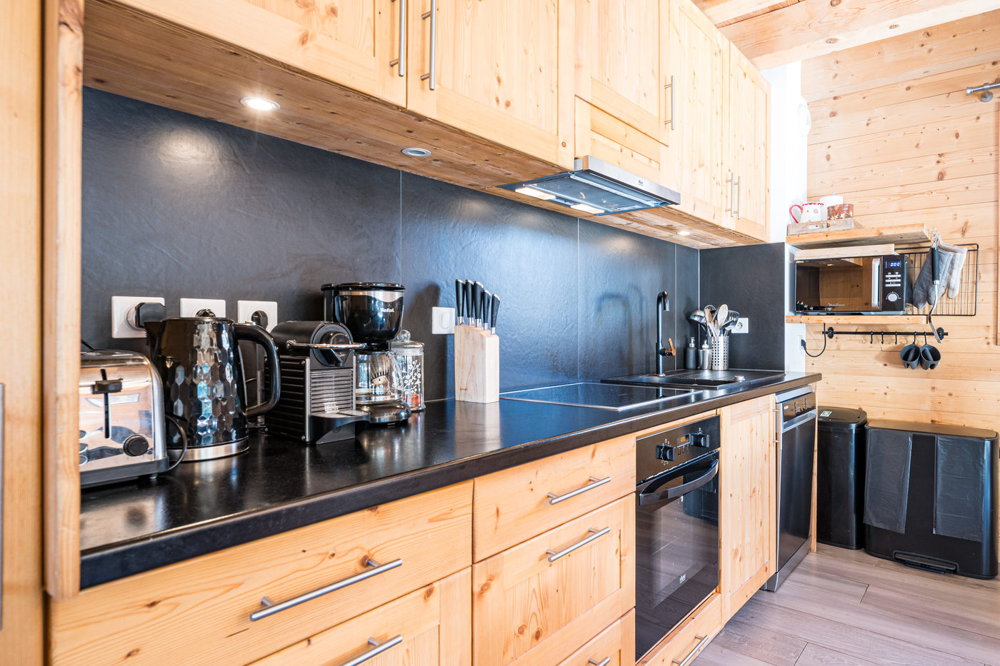
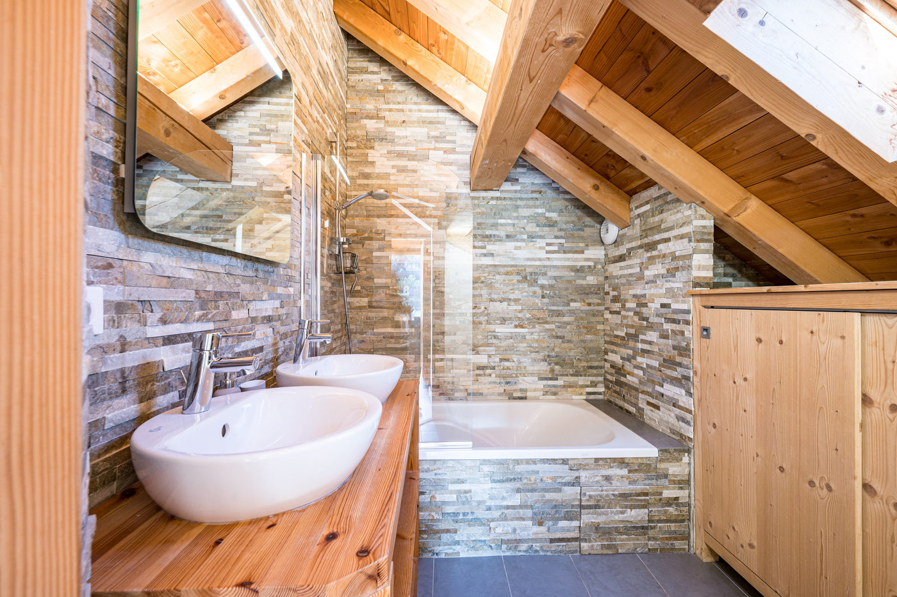
Un chalet individuel de 120 m² sur trois niveaux, tout en bois clair, pensé pour les grandes tablées : on se retrouve au milieu, on dort au calme en haut et en bas.
Au premier étage, la salle de vie avec sa cuisine ouverte s’ouvre sur une terrasse ensoleillée face aux montagnes. Les chambres se partagent le rez-de-jardin et le dernier étage, chacun avec sa salle de bain.

Une chambre avec lits superposés, des jeux, des barrières pour les escaliers et l’équipement bébé : les petits ont leur place.
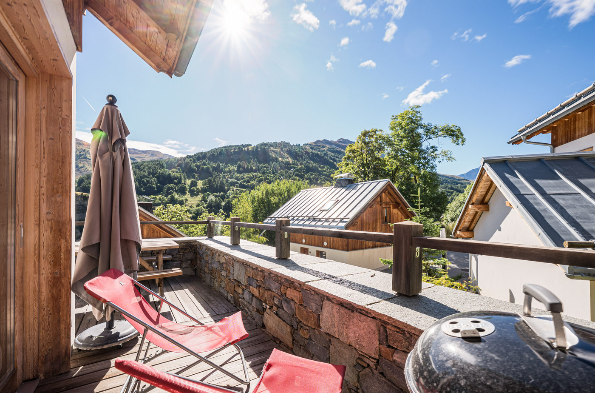
Une grande table, la raclette et la fondue, puis la terrasse au soleil couchant : la soirée commence tôt.
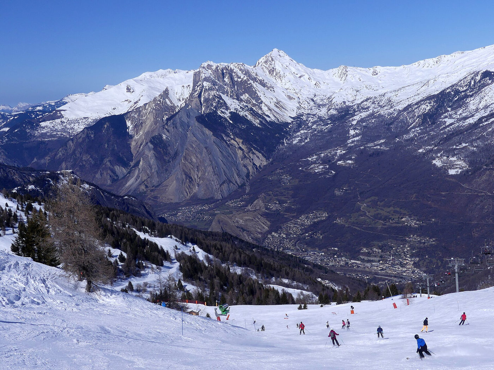
La navette gratuite à 50 m, un rack à skis au garage et un chauffe-chaussures pour repartir au sec le matin.
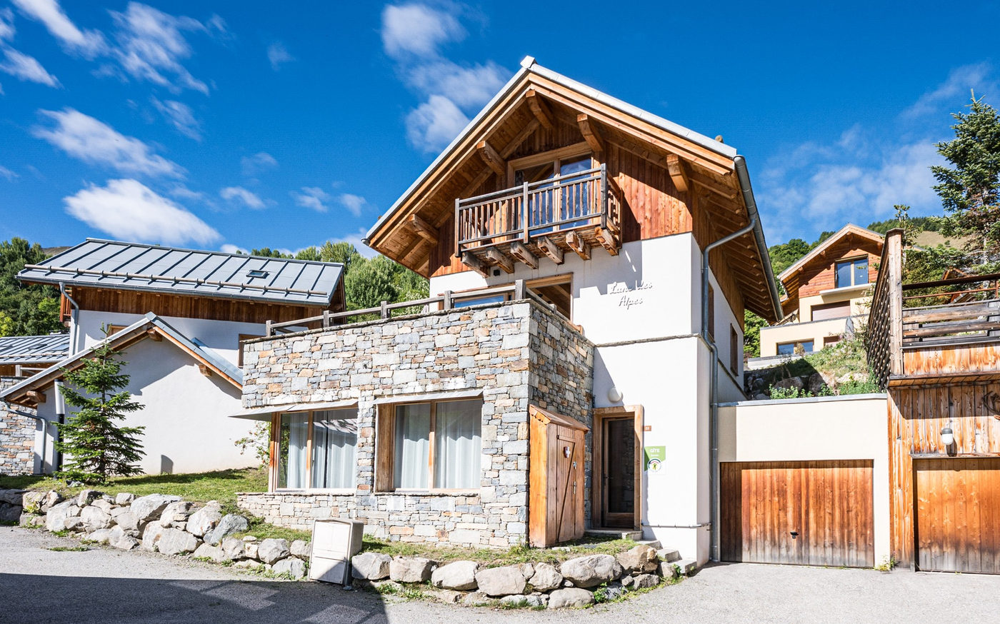
Randonnées, lacs d’altitude et cols mythiques : le chalet accueille aussi les cyclistes, avec garage à vélos.
Le chalet se loue en entier, jusqu’à 12 personnes. Le prix exact dépend de vos dates : choisissez-les sur le planning, le total s’affiche aussitôt.
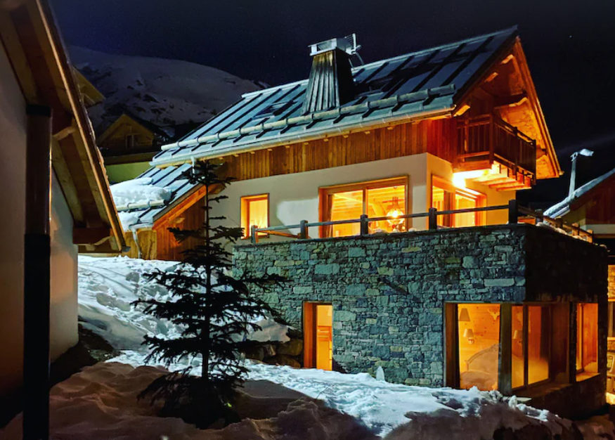
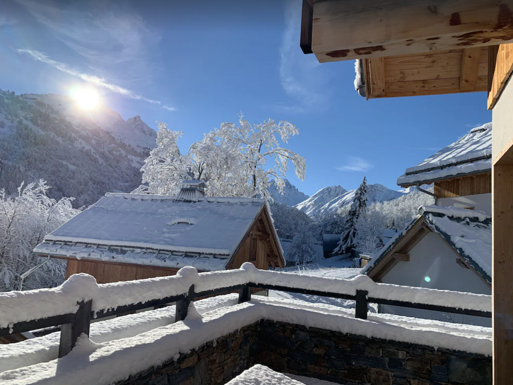
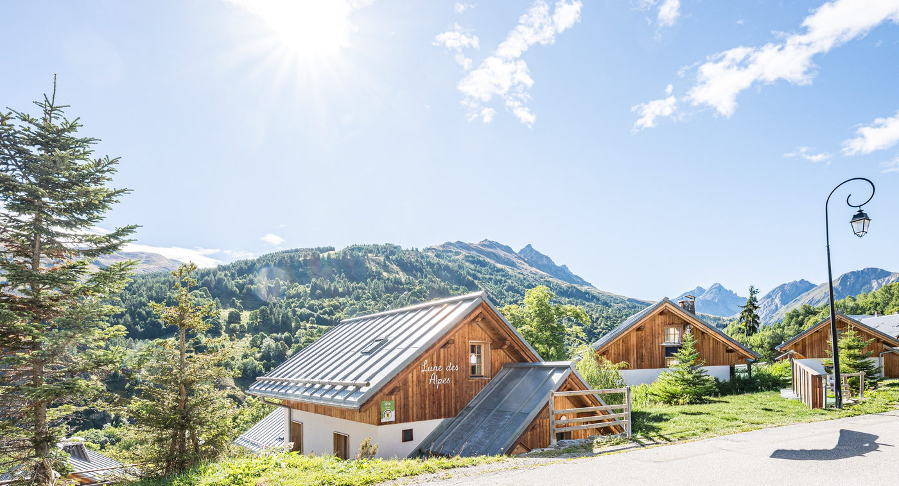
Olivier accueille ses voyageurs au Chalet Lune des Alpes et leur répond en français, en anglais ou en portugais, de la réservation jusqu’au départ.
À votre arrivée, quelques produits locaux vous attendent pour goûter la Savoie dès le premier soir. Les voyageurs parlent d’un contact « très facile ».
« Nous avons passé une excellente semaine à Valloire dans ce logement confortable, au calme et bien aménagé. La vue depuis la terrasse est magnifique sur les montagnes […] la pièce de vie est grande, lumineuse et agréable. »
« Le contact avec le propriétaire est très facile. Le gîte est très bien placé avec une superbe vue sur les montagnes. Il ne manque rien, c’était juste parfait. »
« De petites attentions à notre arrivée pour nous faire découvrir les produits locaux, de l’espace et des jeux pour accueillir les enfants ; confort et intimité pour un séjour en grande famille. »
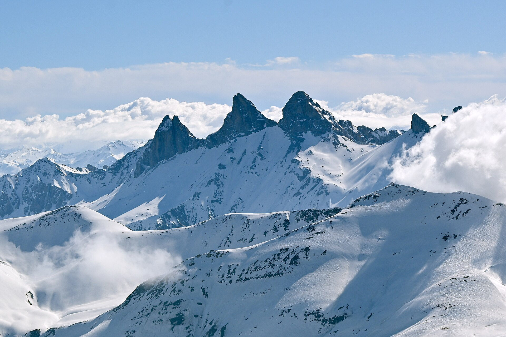
Choisissez vos dates sur le planning : le prix s’affiche aussitôt.
Réservez en ligne avec le planning, ou posez votre question : Olivier vous répond rapidement.
« Le contact avec le propriétaire est très facile. Le gîte est très bien placé avec une superbe vue sur les montagnes. Il ne manque rien, c’était juste parfait. »
Jusqu’à 12 personnes, dans 5 chambres : deux chambres avec un lit de 160 cm au 2e étage, deux chambres avec un lit de 140 cm et une chambre famille (lit de 140 cm et lits superposés) au rez-de-jardin. Le chalet vous est entièrement réservé.
En ligne, avec le bouton « Réserver » : vous choisissez vos dates sur le planning et le prix du séjour s’affiche aussitôt. Vous pouvez aussi appeler Olivier au 06 40 60 93 72. Pendant les vacances de Noël et d’hiver, le chalet se loue à la semaine, du samedi au samedi.
En hiver, la navette gratuite s’arrête à 50 m du chalet et vous dépose en moins de 5 minutes au télésiège du Moulin Benjamin, porte du domaine Galibier-Thabor. Le centre du village est à 1,7 km.
Oui : les draps et les serviettes sont fournis. Le chauffage et l’électricité sont compris. Le ménage de fin de séjour est proposé en option (200 €).
Une place au garage, avec un rack à skis et une borne de recharge pour voiture électrique et une place extérieure devant le chalet.
Oui, 1 000 €, rendue après l’état des lieux de sortie.
Oui : équipement bébé, barrières pour les escaliers, jeux et livres. Chaque niveau a ses toilettes, pratique avec les petits.